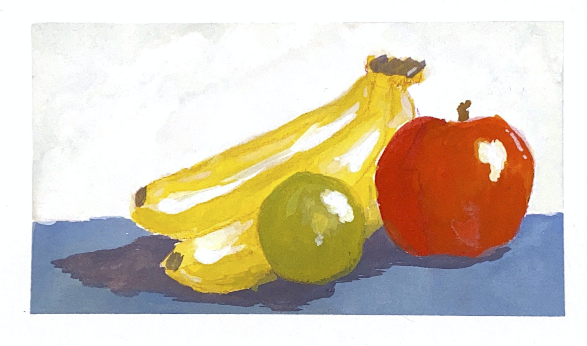
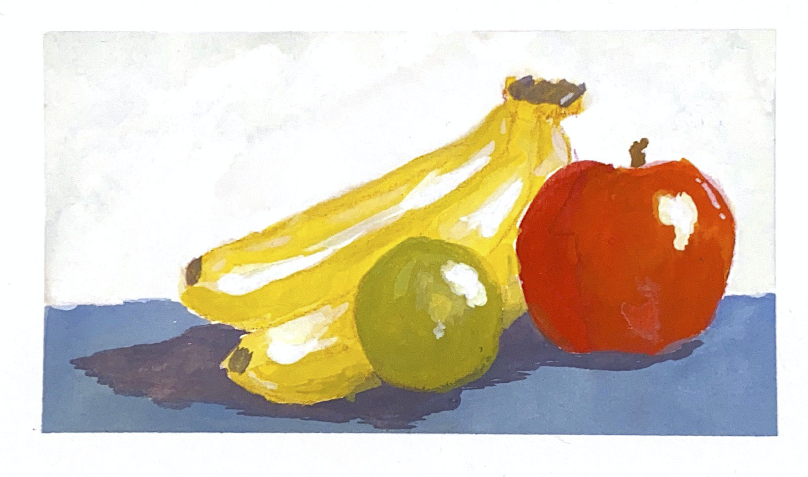

Simon Chen
Simon Chen is a college student that is double majoring in Journalism + Design and Interdisciplinary Science at Eugene Lang College of Liberal Arts. While his passions lie in writing articles and spending time in the lab, he can now be seen passing time in his hometown in Michigan painting beautiful pieces that are occasionally inspired by classical pieces such as “Girl with a Pearl Earring” by Johannes Vermeer.


 
